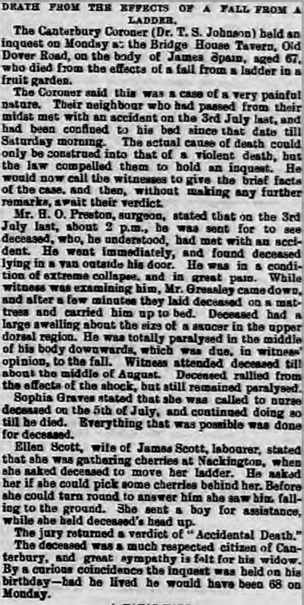
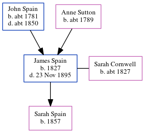

James Spain 1827 - 1895
[ Home ] | [ Calendar ] | [ Surnames Index ] | [ Errors ] | [ Family History ]A wholesale fruiterer and the child of John Spain (a labourer) and Anne Sutton, James Spain, the three times great-uncle of Nigel Horne, was born in Stourmouth, Kent, England in 18271,2,3,4, was baptised there on 23 Dec 1827 and married Sarah Cornwell (with whom he had 1 child, Sarah Ann) at St Mildred's Church, Canterbury, Kent, England on 18 Jan 18536.
During his life, he was living in Canterbury in 18611; at Cossington Street in Canterbury on 2 Apr 187110; and at 32 Old Dover Road in Canterbury on 3 Apr 18819, on 5 Apr 18918 and in 1895 which is where he died on 23 Nov 18955 (fell off ladder). He was buried at St Martin, Canterbury on 28 Nov 18957.
Parents
- John was born c. 1781
- Anne was born c. 1789
Children
- Sarah Ann was born in 1857
Citations
- 1861 England Census Online publication - Provo, UT, USA: The Generations Network, Inc., 2005.Original data - Census Returns of England and Wales, 1861. Kew, Surrey, England: The National Archives of the UK (TNA): Public Record Office (PRO), 1861. Data imaged from the National
- 1871 England Census Online publication - Provo, UT, USA: The Generations Network, Inc., 2004.Original data - Census Returns of England and Wales, 1871. Kew, Surrey, England: The National Archives of the UK (TNA): Public Record Office (PRO), 1871. Data imaged from the National
- 1881 England Census Online publication - Provo, UT, USA: The Generations Network, Inc., 2004. 1881 British Isles Census Index provided by The Church of Jesus Christ of Latter-day Saints © Copyright 1999 Intellectual Reserve, Inc. All rights reserved. All use is subject to the
- 1891 England Census Online publication - Provo, UT, USA: The Generations Network, Inc., 2005.Original data - Census Returns of England and Wales, 1891. Kew, Surrey, England: The National Archives of the UK (TNA): Public Record Office (PRO), 1891. Data imaged from The National
- England & Wales deaths 1837-2007 - Findmypast
- England & Wales Marriages 1837-2005 - Findmypast
- Kent, Canterbury Archdeaconry burials 1538-1988 - Findmypast
- 1891 England, Wales & Scotland Census - Findmypast (was age 63 and the head of the household)
- 1881 England, Wales & Scotland Census - Findmypast (was age 53 and the head of the household)
- 1871 England, Wales & Scotland Census - Findmypast (was age 43 and the head of the household)
Media
Whitstable Times 30 Nov 1895

England & Wales deaths 1837-2007 - BMD/D/1895/4/AZ/000335/358
England & Wales marriages 1837-2008 - BMD/M/1853/1/EZ/001164/029
Kent, Canterbury Archdeaconry marriages 1538-1928 - GBPRS/CANT/M/97062354/1
Kent, Canterbury Archdeaconry burials 1538-1988 - GBPRS/CANT/D/95138868
1871 England, Wales & Scotland Census - GBC/1871/0014182766
1881 England, Wales & Scotland Census - GBC/1881/0004719172
1891 England, Wales & Scotland Census - GBC/1891/0005734325
Family Tree
Map
Generated by ged2site. Last updated on Jul 3, 2024
Known Issues
Date of baptism (23 Dec 1827) before date of birth (1827)
Residence record for 1895 contains no citation
May have been living with mother on 1861, but the addresses don't match or aren't detailed enough to be sure
Listed in the residence for 1895, but spouse Sarah Cornwell is not